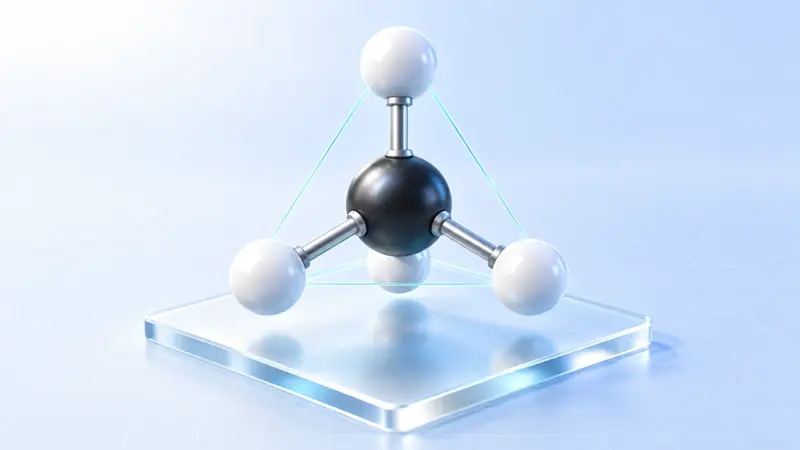
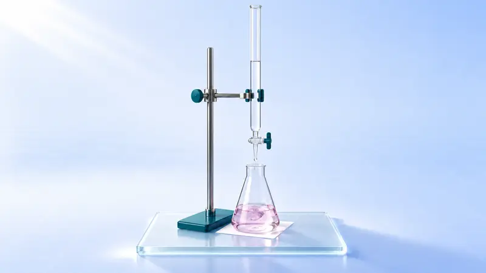
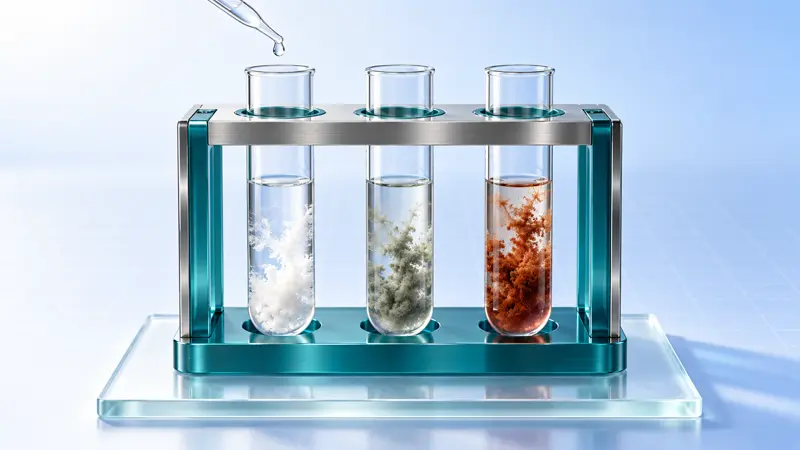
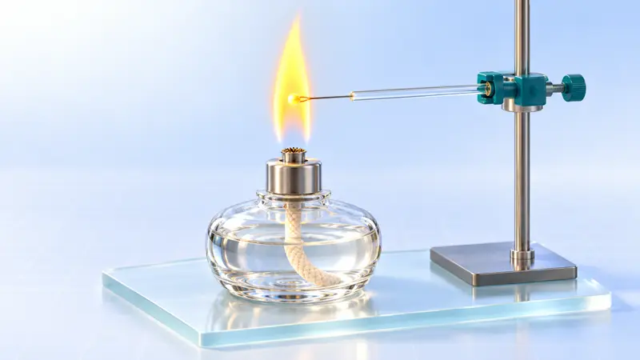
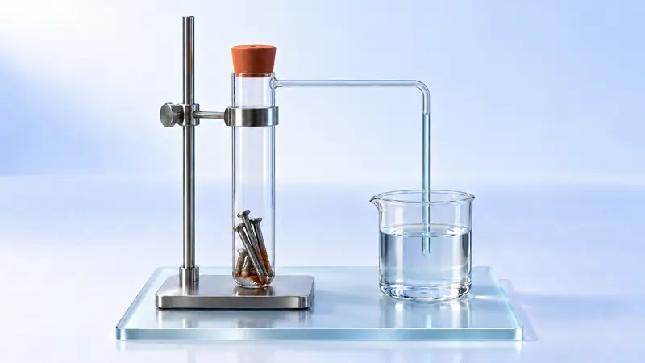
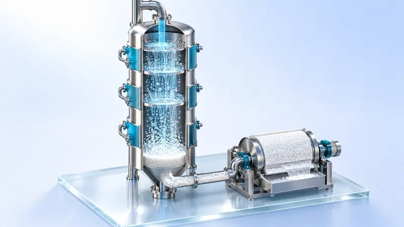

合成氨工业
🧪 3D 实验 · 7 段
化学反应速率的影响因素
🧪 3D 实验 · 8 段
搭建球棍模型认识有机化合物分子结构
🧪 3D 实验 · 9 段
强酸与强碱的中和滴定
🧪 3D 实验 · 9 段
氯气的制备及性质
🧪 3D 实验 · 9 段
高炉炼铁
🧪 3D 实验 · 8 段
金属冶炼：电解熔融盐 + 铝热
🧪 3D 实验 · 8 段
煤的综合利用：以煤的气化为主线
🧪 3D 实验 · 8 段
接触法制硫酸
🧪 3D 实验 · 7 段
盐类的水解及其应用
🧪 3D 实验 · 9 段
工业制水泥
🧪 3D 实验 · 8 段
铁及其化合物：铁的价态转化
🧪 3D 实验 · 9 段
电解原理：电解氯化铜溶液与饱和食盐水
🧪 3D 实验 · 9 段
氨的制备与性质（含喷泉实验）
🧪 3D 实验 · 9 段
探究影响化学平衡移动的因素
🧪 3D 实验 · 9 段
焰色试验与原子光谱
🧪 3D 实验 · 8 段
原电池：单液到双液
🧪 3D 实验 · 9 段
电解质的电离与溶液导电性、离子反应的实质
🧪 3D 实验 · 9 段
浓、稀硝酸的性质与氮氧化物的转化
🧪 3D 实验 · 9 段
海水提溴：空气吹出法
🧪 3D 实验 · 7 段
金属钠的性质（含钠着火扑救）
🧪 3D 实验 · 9 段
硫、二氧化硫、浓硫酸的性质与不同价态含硫物质的转化
🧪 3D 实验 · 9 段
吸氧腐蚀与暖贴的设计
🧪 3D 实验 · 9 段
氯碱工业
🧪 3D 实验 · 8 段